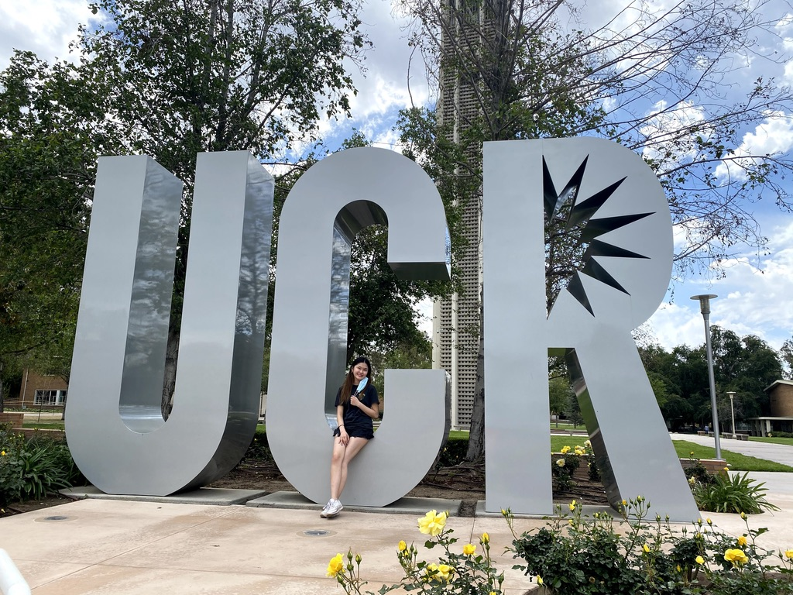
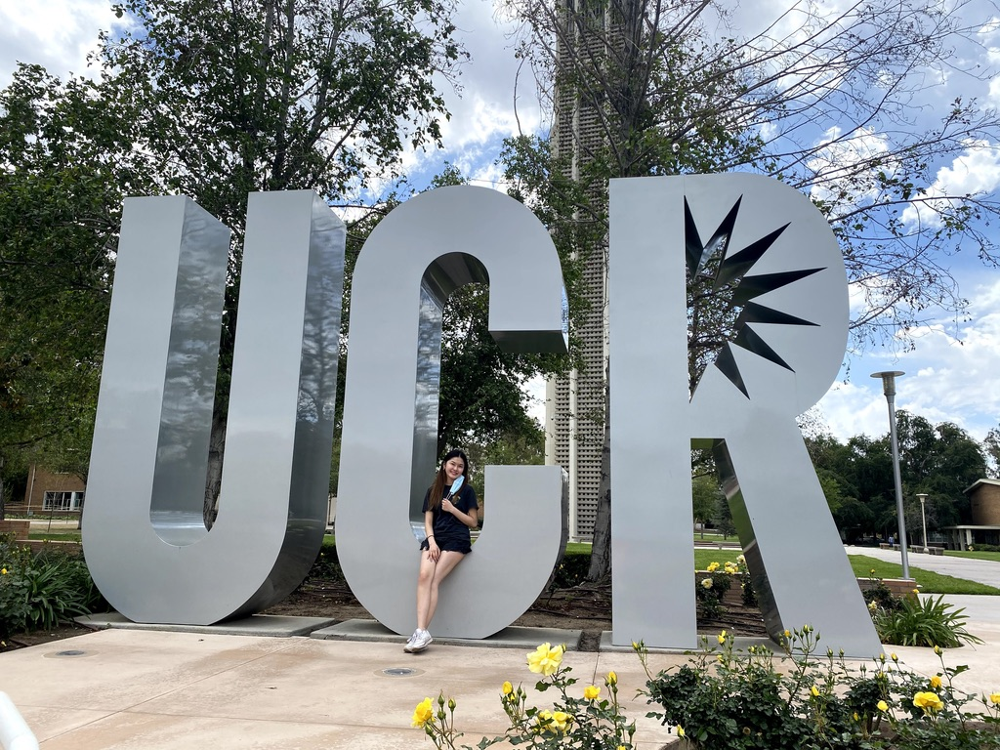
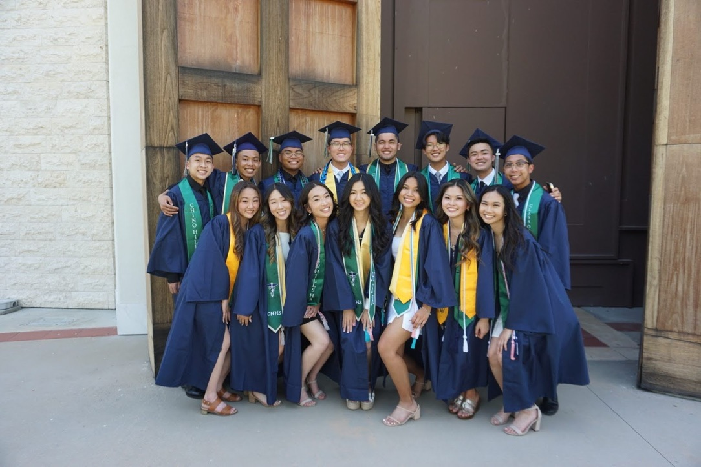
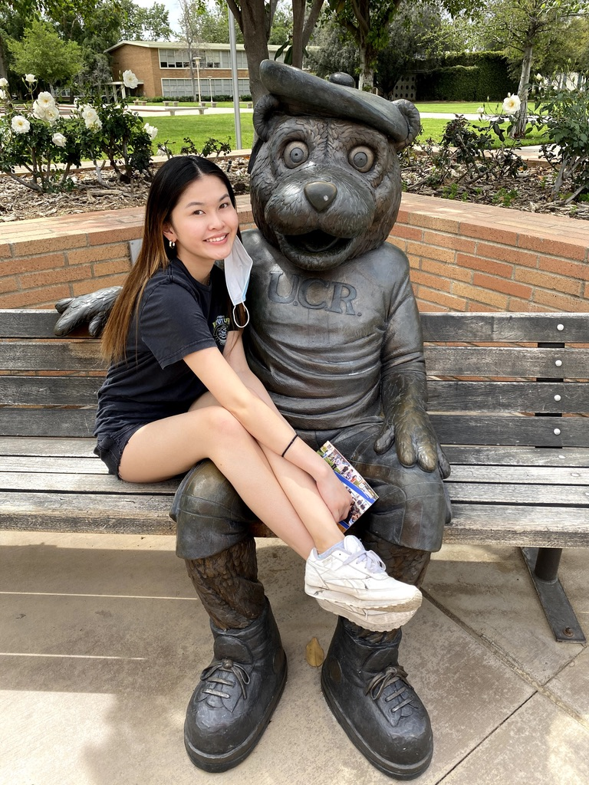
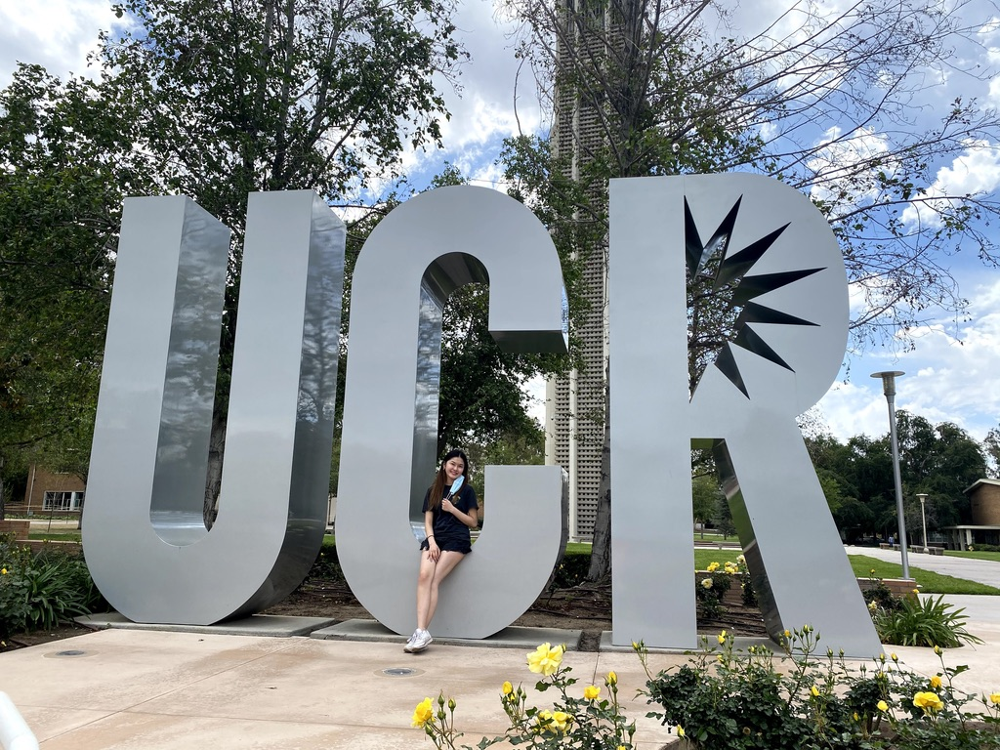
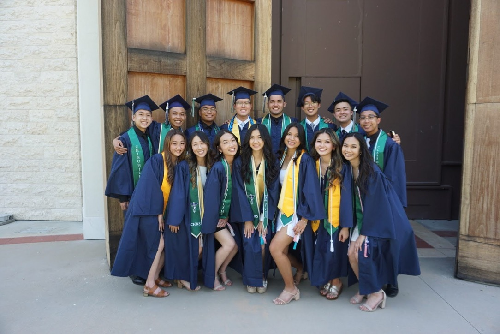
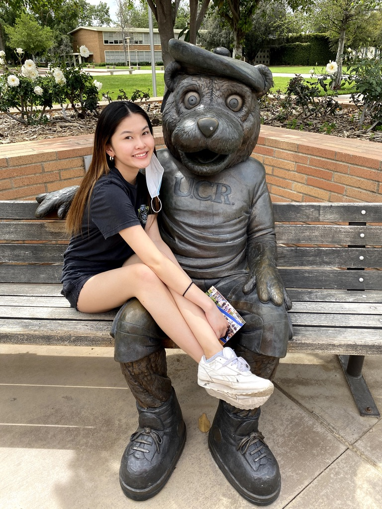

Joyce Wong
I am a first year education major at UC Riverside who is looking to succeed in the future. I am an adaptive team player, certified in workplace ehtics, customer service, decision making, food handler, and computer animation. I am a trilingual speaker and can speak english, Cantonese, and Mandarin. I am also musically experienced in piano, clarinet, drums, and mallets as well as athletically experienced in swim and dance.
A work experience that I have is that I used to work at California Noodles and Grill. With this job, I handled the cashier, bussed dirty tables, took orders and bring out food, prepped the garnish plates, and make the beverages. Over the summer going into my senior year of high school, I also was apart of a work experienced internship and job shadow psychology related jobs as well as did 90+ hours of research in psychology. My junior year of high school, I also volunteered at Isaiah's rock where I helped provide food and clothed for those in ned, cleaned and washed the dishes and clothes, and organized the clothes.
My hobbies and interest consists of playing and listening to music, cooking / baking, going on walks with my dog, traveling around the world, both playing video games or watch people play video games, and film and edit lifestyle videos.
Experience
Waitress
• handled the cashier
• bussed dirty tables
• took orders and bring out food
Volunteered
• Provided food and clothes for those in need
• Cleaned and washed the dishes and clothes
• Organized the clothes
Education
Chino Hills High School
University of California Riverside
Portfolio
 



 